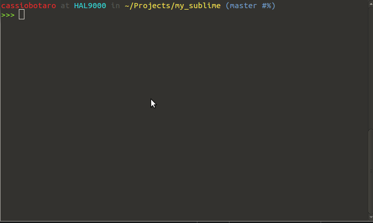

my dot files to improve productivity on bash.
my dot files to improve productivity on ubuntu.

Copy .bash_aliases, .bash_completion and .bashrc to ~/ .
cp .bashrc ~/
cp .bash_aliases ~/
cp .bash_completion ~/
. ~/.bashrc
apt alias - alias for aptget commands
Example:
install -> sudo apt-get install
update -> sudo apt-get update
upgrade -> sudo apt-get upgrade
python utils - calendar, server, pydoc, timeit, profile
git alias - git commands
Example:
ga -> git add
gcl -> git clone
gc -> git commit
gco -> git checkout
tree - better directory visualisation
vagrant - vagrant alias
Example:
vup -> vagrant up
vssh -> vagrant ssh
vh -> vagrant halt
kernel clean - remove older kernel using kernelcleanup
To list all aliases type alias at the terminal.
Git, django, vagrant and pip completions.
Better ps1 with color and git status.